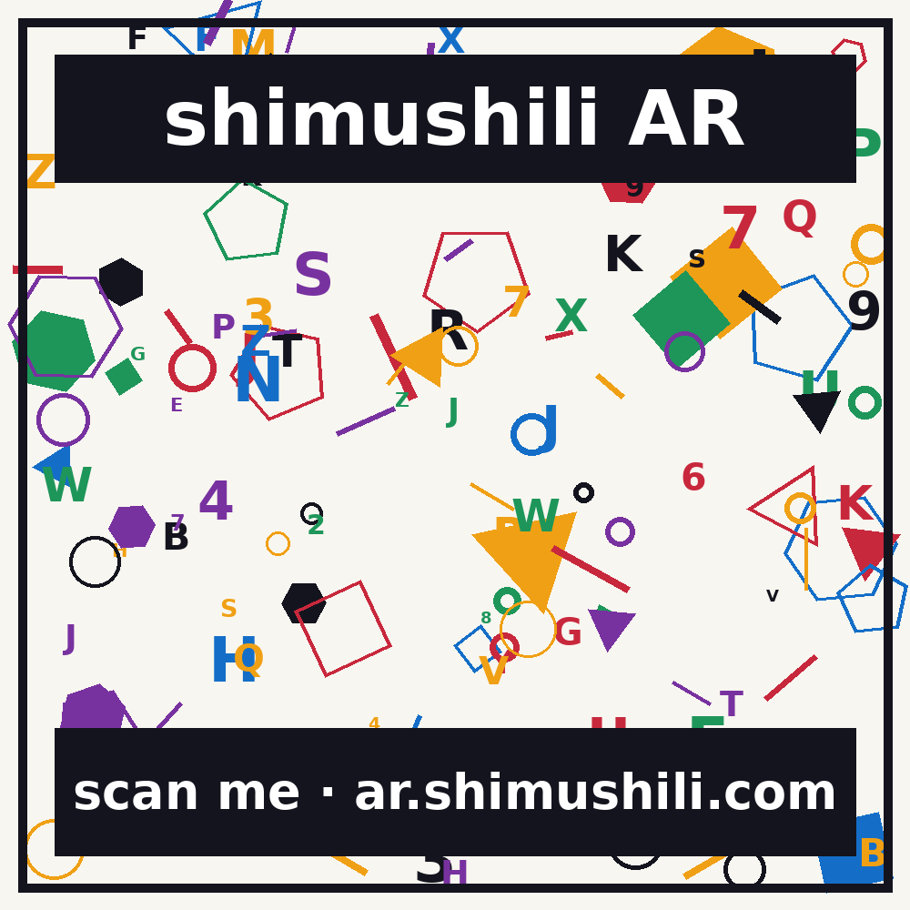

Starting camera…

Point your camera at the target image
No target handy? open it on another screen and scan that.
Camera not available
Allow camera access for this site and open it over https://. On iPhone use Safari or Chrome.
https://